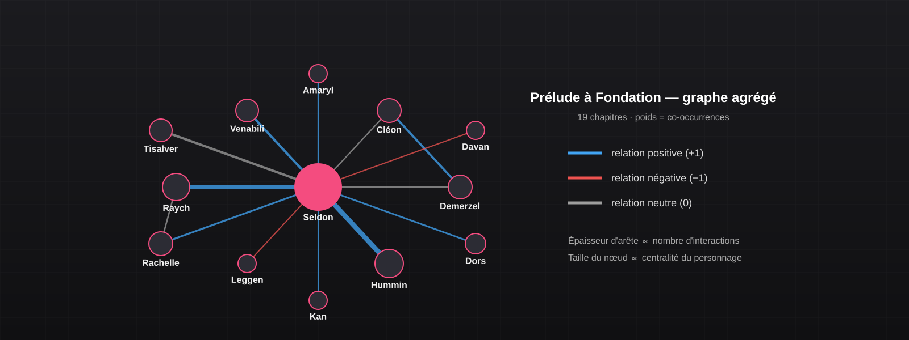
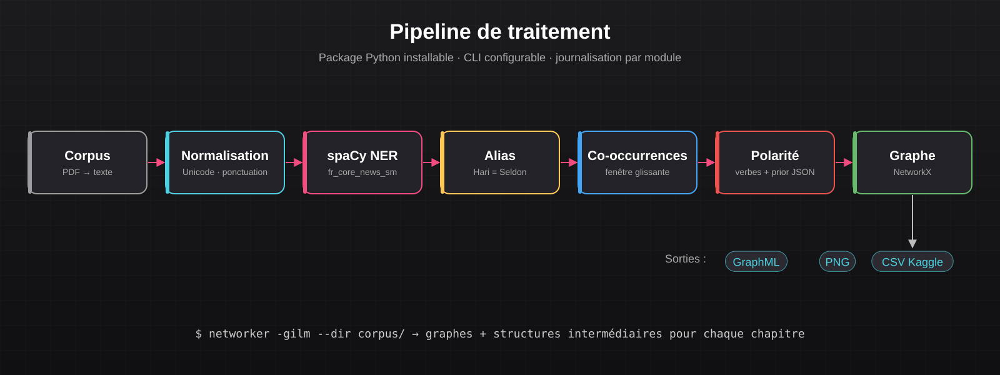

Projet 16 : Networker – NLP & NER Asimov
Pipeline Python de traitement automatique du langage qui extrait les personnages de romans d'Asimov, résout leurs alias et reconstruit le réseau de leurs relations sous forme de graphe.



À propos du projet
Ce projet de traitement automatique du langage consiste à reconstruire automatiquement le réseau social des personnages d'un roman. Le corpus est composé de deux romans d'Isaac Asimov, Prélude à Fondation et Les Cavernes d'acier, découpés en 37 chapitres. Pour chaque chapitre, le pipeline produit un graphe dont les nœuds sont les personnages et les arêtes leurs interactions.
Le cœur du problème est la reconnaissance d'entités nommées (NER) et la résolution d'alias : un même personnage apparaît sous plusieurs noms (« Hari Seldon », « Seldon », « le mathématicien »). Le pipeline les regroupe, compte les co-occurrences dans une fenêtre glissante, puis estime la polarité de chaque relation (positive, négative ou neutre) à partir des verbes employés.
Le projet est packagé comme un outil en ligne de commande installable (pip install -e .), et les résultats sont évalués sur un classement de type Kaggle via un fichier de soumission GraphML.
Compétences développées :
- Traitement automatique du langage en Python (tokenisation, normalisation, étiquetage)
- Reconnaissance d'entités nommées avec spaCy (modèle
fr_core_news_sm) - Algorithmique du texte : distance d'édition, fenêtres de co-occurrence, heuristiques d'alias
- Modélisation et export de graphes (NetworkX, GraphML, visualisation Matplotlib)
- Packaging Python et conception d'une CLI configurable avec journalisation par module
- Travail en équipe sur un dépôt Git partagé